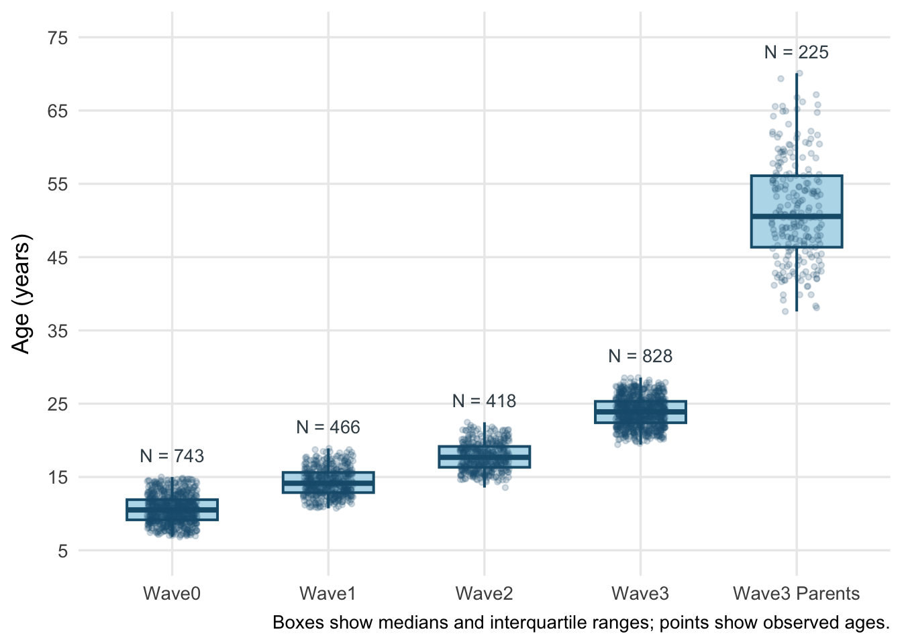
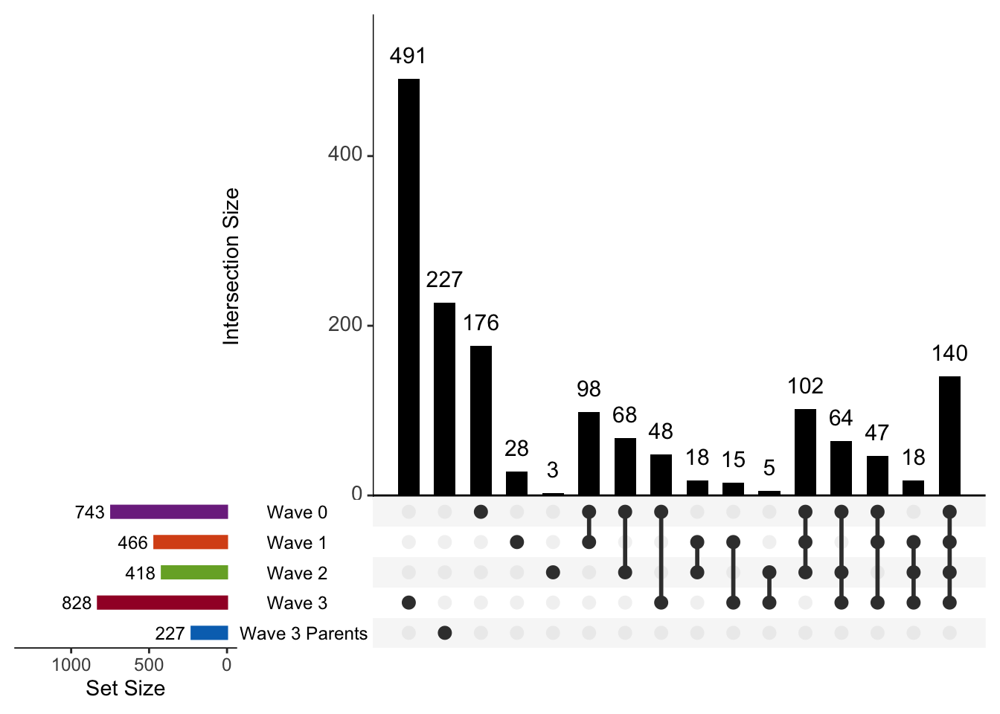

| Demographic Characteristics of the Study Sample | |||||
|---|---|---|---|---|---|
| Variable | Wave0 N = 7431 |
Wave1 N = 4661 |
Wave2 N = 4181 |
Wave3 N = 8281 |
Overall N = 1,3212 |
| Sex at birth | |||||
| Male | 422 (56.8%) | 270 (57.9%) | 234 (56.0%) | 422 (51.0%) | 710 (53.7%) |
| Female | 321 (43.2%) | 196 (42.1%) | 184 (44.0%) | 406 (49.0%) | 611 (46.3%) |
| Age | |||||
| Mean (SD) | 10.7 (1.9) | 14.4 (1.9) | 17.9 (1.9) | 24.0 (2.0) | 23.3 (2.6) |
| Median (Q1-Q3) | 10.6 (9.2-11.9) | 14.2 (12.9-15.7) | 17.8 (16.4-19.4) | 23.9 (22.4-25.3) | 23.5 (21.9-25.1) |
| Site | |||||
| EINSTEIN | 0 (0.0%) | 0 (0.0%) | 0 (0.0%) | 22 (2.7%) | 22 (2.7%) |
| HCPA | 0 (0.0%) | 0 (0.0%) | 0 (0.0%) | 262 (31.6%) | 262 (31.6%) |
| HDVS | 366 (49.3%) | 213 (45.7%) | 193 (46.2%) | 0 (0.0%) | 0 (0.0%) |
| INRAD | 377 (50.7%) | 253 (54.3%) | 225 (53.8%) | 399 (48.2%) | 399 (48.2%) |
| INSCER | 0 (0.0%) | 0 (0.0%) | 0 (0.0%) | 145 (17.5%) | 145 (17.5%) |
| State | |||||
| RS | 366 (49.3%) | 213 (45.7%) | 193 (46.2%) | 408 (49.3%) | 655 (49.6%) |
| SP | 377 (50.7%) | 253 (54.3%) | 225 (53.8%) | 420 (50.7%) | 666 (50.4%) |
| Handedness | |||||
| Ambidextrous | 25 (3.4%) | 20 (4.4%) | 14 (3.4%) | 17 (2.3%) | 17 (2.3%) |
| Left | 50 (6.8%) | 37 (8.2%) | 28 (6.8%) | 49 (6.6%) | 49 (6.6%) |
| Right | 657 (89.8%) | 394 (87.4%) | 369 (89.8%) | 679 (91.1%) | 679 (91.1%) |
| Selection | |||||
| Random | 342 (46.0%) | 210 (45.1%) | 193 (46.2%) | 316 (38.2%) | 534 (40.4%) |
| High Risk | 401 (54.0%) | 256 (54.9%) | 225 (53.8%) | 512 (61.8%) | 787 (59.6%) |
| Skin color | |||||
| White | 411 (55.3%) | 249 (53.4%) | 234 (56.0%) | 441 (53.3%) | 727 (55.0%) |
| Black | 92 (12.4%) | 72 (15.5%) | 45 (10.8%) | 109 (13.2%) | 178 (13.5%) |
| Between white and black (brown) | 235 (31.6%) | 142 (30.5%) | 136 (32.5%) | 273 (33.0%) | 409 (31.0%) |
| Indigenous | 2 (0.3%) | 1 (0.2%) | 1 (0.2%) | 2 (0.2%) | 3 (0.2%) |
| Asian | 3 (0.4%) | 2 (0.4%) | 2 (0.5%) | 3 (0.4%) | 4 (0.3%) |
| 1 n (%) | |||||
| 2 Overall N includes participants with neuroimaging data at any timepoint and reflects data from their most recent assessment. | |||||
BHRC Research Data Guide
Public aggregate summaries
10 BHRC neuroimaging data
Author: Lucas Toshio Ito - UNIFESP
lucas.toshio.ito@gmail.com
Last updated: March 16, 2026
If you need access to the BIDS dataset, include this in the “Additional Data Needs” section of the proposal.
10.1 Overview
This Neuroimaging Database includes magnetic resonance imaging (MRI) scans collected as part of the Brazilian High-Risk Cohort for Mental Health Conditions (BHRC), a longitudinal population-based study designed to track psychiatric and neurodevelopmental trajectories from childhood through early adulthood. Imaging data were acquired across multiple waves and sites, with multimodal acquisitions encompassing structural, functional, and diffusion MRI.
Neuroimaging assessments were conducted across four waves of data collection:
| Wave | Years | Modalities |
|---|---|---|
| Wave 0: Baseline | 2010–2012 | T1w, DWI, MTS, rs-fMRI |
| Wave 1: ~4-year follow-up | 2014–2016 | T1w, DWI, MTS, rs-fMRI |
| Wave 2: ~8-year follow-up | 2018–2020 | T1w, FLAIR, DWI, rs-fMRI |
| Wave 3: ~15-year follow-up | 2023–2025 | T1w, T2w, rs-fMRI, task-fMRI (PEER, Movies), fmap |
During Waves 0–2, only a subset of the cohort was invited to undergo neuroimaging assessments. In Wave 3, imaging scanners were improved, with a new optimized protocol, and all available probands were invited to participate along with their parents.
10.2 Sample Characteristics
The Overall column reflects the number of unique participants from each wave who contributed to the full imaging sample (N = 1,321).
The boxplots below summarize the age distribution at each imaging wave. Jittered points show the observed ages without participant identifiers. Wave 3 parents are shown separately from probands.

10.2.1 Sample Overlap Between Waves
The UpSet plot and table below show how participants overlap across imaging waves. The plot highlights unique combinations of wave participation, while the table reports the number and percentage of individuals shared between each wave.
| Wave 0 (N=743) | Wave 1 (N=466) | Wave 2 (N=418) | Wave 3 (N=828) | Overall (N=1321) | |
|---|---|---|---|---|---|
| Wave 0 | 743 (100.0%) | 387 (83.0%) | 374 (89.5%) | 299 (36.1%) | 743 (56.2%) |
| Wave 1 | 387 (52.1%) | 466 (100.0%) | 278 (66.5%) | 220 (26.6%) | 466 (35.3%) |
| Wave 2 | 374 (50.3%) | 278 (59.7%) | 418 (100.0%) | 227 (27.4%) | 418 (31.6%) |
| Wave 3 | 299 (40.2%) | 220 (47.2%) | 227 (54.3%) | 828 (100.0%) | 828 (62.7%) |

10.2.2 Psychiatric Phenotypes
Diagnoses were assessed using the Development and Well-Being Assessment (DAWBA), following DSM-IV diagnostic criteria. The table below summarizes lifetime psychiatric disorders identified in the proband sample up to the time of each assessment wave. Each disorder is counted from the wave it was first identified onward. For instance, a participant diagnosed with ADHD at Wave 0 will be counted in all subsequent waves, while one diagnosed only at Wave 2 will be included starting from that wave.
| Cumulative Psychiatric Phenotypes Prevalence Across Waves Among Probands with Neuroimaging Data (BHRC) | |||||
|---|---|---|---|---|---|
| Psychiatric Phenotype | Wave 0 (N=743) | Wave 1 (N=466) | Wave 2 (N=418) | Wave 3 (N=828) | Lifetime (N=1321)1 |
| ADHD | 90 (12.1%) | 98 (21.0%) | 79 (18.9%) | 152 (18.4%) | 267 (20.2%) |
| Anxiety Disorders | 56 (7.5%) | 96 (20.6%) | 108 (25.8%) | 308 (37.2%) | 457 (34.6%) |
| Bipolar Disorder or Mania | 3 (0.4%) | 2 (0.4%) | 1 (0.2%) | 17 (2.1%) | 22 (1.7%) |
| Eating Disorders | 5 (0.7%) | 11 (2.4%) | 10 (2.4%) | 41 (5.0%) | 61 (4.6%) |
| Major Depressive Disorder | 27 (3.6%) | 53 (11.4%) | 97 (23.2%) | 245 (29.6%) | 374 (28.3%) |
| OCD | 2 (0.3%) | 11 (2.4%) | 11 (2.6%) | 24 (2.9%) | 41 (3.1%) |
| Psychosis | 0 (0.0%) | 1 (0.2%) | 3 (0.7%) | 3 (0.4%) | 5 (0.4%) |
| PTSD | 10 (1.3%) | 12 (2.6%) | 14 (3.3%) | 70 (8.5%) | 104 (7.9%) |
| Any Psychiatric Disorder | 226 (30.4%) | 245 (52.6%) | 238 (56.9%) | 538 (65.0%) | 845 (64.0%) |
| Suicidal Ideation2 | 0 (0.0%) | 0 (0.0%) | 0 (0.0%) | 350 (42.3%) | 488 (36.9%) |
| Suicide Attempt2 | 0 (0.0%) | 0 (0.0%) | 0 (0.0%) | 171 (20.7%) | 248 (18.8%) |
| 1 Lifetime N represents the phenotype at any assessment among participants with neuroimaging data. | |||||
| 2 Suicidality phenotypes were only evaluated in the last follow-up (Wave 3). | |||||
| Diagnoses were assessed using the Development and Well-Being Assessment (DAWBA) following DSM-IV criteria. The table summarizes lifetime psychiatric disorders identified in probands up to each wave. Phenotypes are counted from the wave of first identification onward. |
|||||
10.2.3 Sample Overlap with other Biological Variables
Participants with neuroimaging data also have genotyping and polygenic scores available through the Polygenic Score Database, along with whole genome sequencing, DNA methylation, serum extracellular vesicle microRNA (EV-miRNA), and messenger RNA (mRNA) sequencing data collected across multiple waves. While genotyping and WGS were performed once and linked to imaging data across time points, DNA methylation, EV-miRNA, and mRNA were collected longitudinally, enabling the investigation of temporal molecular changes in relation to brain development. These overlapping datasets support integrative analyses of genomic, epigenomic, and transcriptomic factors associated with brain structure and function.
| Overlap with Other Biological Variables | |||||
|---|---|---|---|---|---|
| Variable | Wave 0 (N=743) | Wave 1 (N=466) | Wave 2 (N=419) | Wave 3 (N=828) | Overall (N=1321) |
| Genotyping and Polygenic Scores | 731 (98.4%) | 461 (98.9%) | 416 (99.5%) | 767 (92.6%) | 1250 (94.6%) |
| DNA Methylation | 369 (49.7%) | 371 (79.6%) | 325 (77.8%) | 0 | 457 (34.6%) |
| mRNA Sequencing | 570 (76.7%) | 415 (89.1%) | 0 | 0 | 743 (56.2%) |
| Serum EV-miRNA (Jessica) | 0 | 116 (24.9%) | 117 (28.0%) | 0 | 0 |
| Serum EV-miRNA (Yanka) | 58 (7.8%) | 126 (27.0%) | 105 (25.1%) | 123 (14.9%) | 0 |
| Serum EV-miRNA (All) | 58 (7.8%) | 191 (41.0%) | 171 (40.9%) | 123 (14.9%) | 198 (15.0%) |
| Whole Genome Sequencing (WGS) | 734 (98.8%) | 466 (100.0%) | 417 (99.8%) | 790 (95.4%) | 1275 (96.5%) |
10.3 Imaging Waves Overview
10.3.1 Waves 0, 1, and 2
- Participants aged ~6–14 at baseline and ~13–22 by Wave 2
- Scanned at two sites:
- Instituto de Radiologia do Hospital das Clínicas FMUSP (INRAD - São Paulo)
- Hospital Dom Vicente Scherer (ICSMPA - Porto Alegre)
- 1.5 Tesla MRI scanners
- Modalities:
- T1-weighted structural MRI (T1w)
- Diffusion-weighted imaging (DWI)
- Magnetization Transfer Saturation (MTS) - Only Waves 0 and 1
- Fluid-Attenuated Inversion Recovery (FLAIR) - Only Wave 2
- Resting-state fMRI (rs-fMRI)
10.3.2 Wave 3
- Participants aged ~19–28, plus parents aged ~37-70 when available
- Scanned at four sites:
- Instituto de Radiologia do Hospital das Clínicas FMUSP (INRAD - São Paulo)
- Hospital Israelita Albert Einstein (EINSTEIN - São Paulo)
- Hospital de Clínicas de Porto Alegre (HCPA - Porto Alegre)
- Instituto do Cérebro da PUCRS (INSCER - Porto Alegre)
- 3 Tesla MRI scanners
- Modalities:
- T1-weighted (T1w) and T2-weighted (T2w) structural MRI
- Resting-state fMRI: three runs per participant
- Task-based fMRI, including:
- Fieldmap sequences for distortion correction
10.4 BIDS Organization
The dataset follows the Brain Imaging Data Structure (BIDS) standard (Gorgolewski et al. 2016) and includes derivatives for preprocessing outputs. Raw DICOMs were converted to NIfTI using dcm2niix (Li et al. 2016), defaced using mideface (FreeSurfer), and organized per the BIDS 1.10.0 specification. Each subject is stored under sub-<ID>, with ses-<wave> session folders. Derivative directories are shared separately due to their size and include outputs from preprocessing tools (fMRIPrep, MRIQC, FreeSurfer).
└── BIDS/
└── sub-<ID>/
└── ses-<wave>/
└── anat/
└── dwi/
└── fmap/
└── func/
└── dataset_description.json
└── participants.json
└── participants.tsv
└── README
└── CHANGES
└── derivatives/
└── ses-<wave>/
└── fmriprep/
└── freesurfer/
└── mriqc/ 10.5 Quality Control
MRIQC v24.0.2 (Esteban et al. 2017) was used to compute automated image quality metrics (IQMs) for all anatomical and functional scans. The outputs include:
- Subject-level HTML reports
- Group-level summary TSVs with metrics such as SNR, FD, and spatial/temporal outliers
These are stored in the derivatives/mriqc/ directory and can help identify motion artifacts, blurring, and signal dropout.
10.6 Preprocessing
All structural and functional data were preprocessed using fMRIPrep v25.1.3 (Esteban et al. 2019). Processing was done with default settings under BIDS-compliant pipelines.
10.6.1 Anatomical (T1w, T2w)
- Bias correction (N4)
- Skull stripping and tissue segmentation (gray matter, white matter, CSF)
- Surface reconstruction with FreeSurfer v7.3.2 (Fischl 2012)
- Spatial normalization to MNI152NLin2009cAsym
- Outputs (e.g.,
.surf.gii,.annot) are stored underderivatives/freesurfer/
10.6.2 Functional (Resting and Task fMRI)
- Slice timing and motion correction
- Distortion correction via:
- Fieldmaps (when available)
- SyN-based estimation (otherwise)
- Co-registration to T1w (BBR)
- Normalization to MNI space
- Confound regressors:
- Motion parameters
- Framewise Displacement (FD), DVARS
- aCompCor (WM/CSF signal)
- Global signal
- Output includes preprocessed BOLD series, confounds, masks
- All data saved in
derivatives/fmriprep/
10.7 Diffusion, MTS and FLAIR Data
- DWI, MTS and FLAIR sequences are included in raw form only
- These were not processed in the current release
- Files are organized under
dwi/andanat/in BIDS format
Esteban, Oscar, Daniel Birman, Marie Schaer, Oluwasanmi O. Koyejo, Russell A. Poldrack, and Krzysztof J. Gorgolewski. 2017. “MRIQC: Advancing the Automatic Prediction of Image Quality in MRI from Unseen Sites.” PLOS ONE 12 (9): e0184661. https://doi.org/10.1371/journal.pone.0184661.
Esteban, Oscar, Christopher J. Markiewicz, Ross W. Blair, et al. 2019. “fMRIPrep: A Robust Preprocessing Pipeline for Functional MRI.” Nature Methods 16: 111–16. https://doi.org/10.1038/s41592-018-0235-4.
Fischl, Bruce. 2012. “FreeSurfer.” NeuroImage 62 (2): 774–81. https://doi.org/10.1016/j.neuroimage.2012.01.021.
Gorgolewski, Krzysztof J., Tibor Auer, Vince D. Calhoun, et al. 2016. “The Brain Imaging Data Structure, a Format for Organizing and Describing Outputs of Neuroimaging Experiments.” Scientific Data 3: 160044. https://doi.org/10.1038/sdata.2016.44.
Li, Xiangrui, Paul S. Morgan, John Ashburner, Jolinda Smith, and Christopher Rorden. 2016. “The First Step for Neuroimaging Data Analysis: DICOM to NIfTI Conversion.” Journal of Neuroscience Methods 264: 47–56. https://doi.org/10.1016/j.jneumeth.2016.03.001.